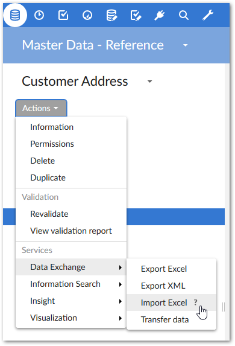
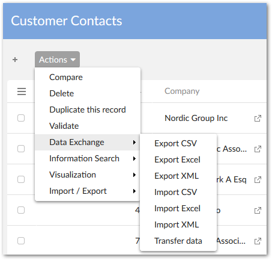
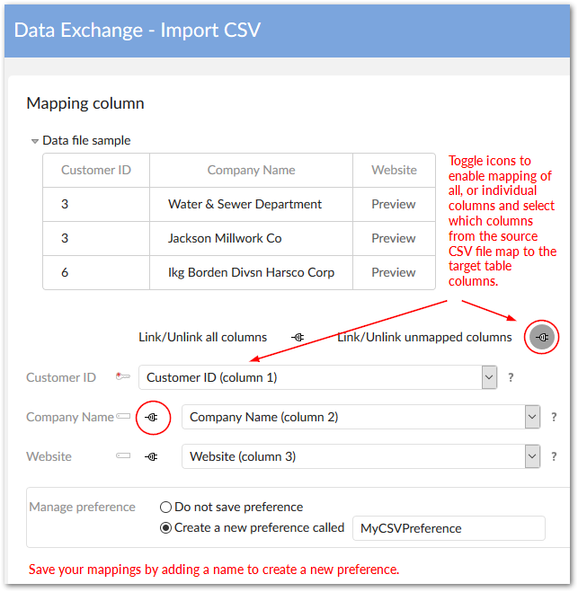
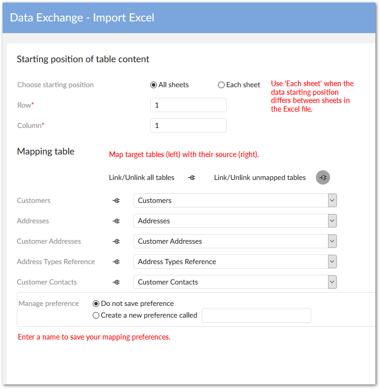
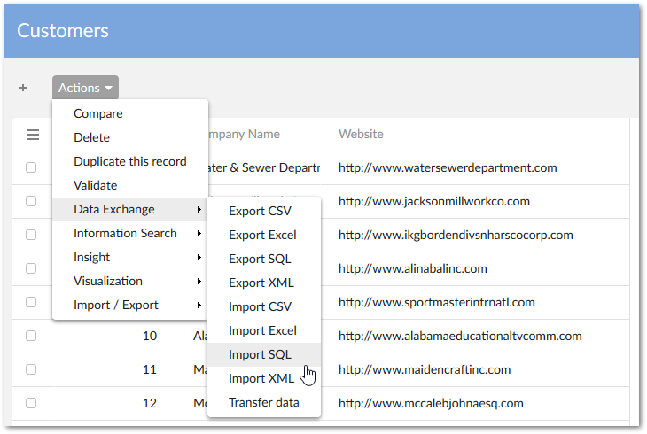
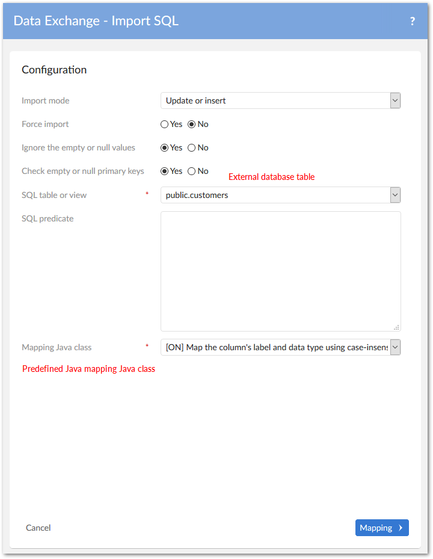
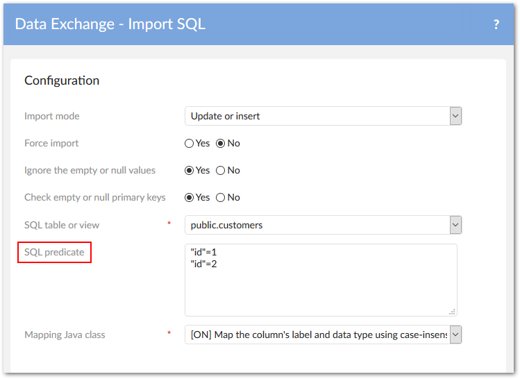
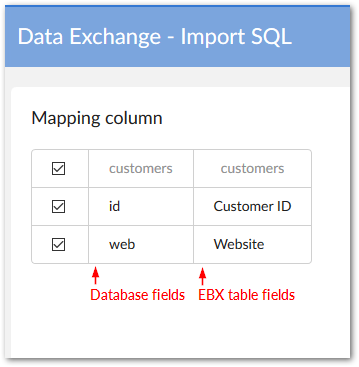
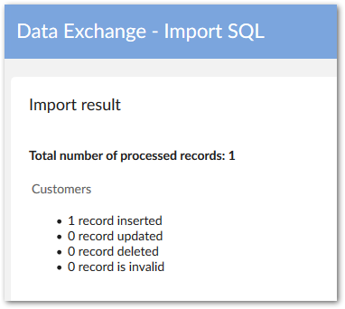

Importing data
Overview
When you import data using the add-on, you bring data from a source location such as a file, or database, into a target EBX® table. You can initiate import from the following two locations:
A dataset's Actions menu. Note that the only available import format here is importing from an Excel file. You will have the option of selecting one or more of the dataset's tables as the import's target.

A table's Actions menu. All import formats are available here and the table from which you run the service becomes the target.

Attention
When importing XML or Excel, you can import multi-valued complex fields. All levels of a complex field can be imported with XML. However, only the first level can be imported from an Excel file.
Common pages
There are several pages common to CSV, Excel and XML import operations. Note that the Configuration, Mapping, and Simulation screens are accessible by default. However, administrators can use permissions to restrict access to these screens for specific profiles. See Setting import and export permissions for more information.
The following sections provide brief overviews of each page:
Attention
At any time, if you have a question about an option on an import page, hover your mouse over its label and click the icon to open the related tooltip. Additionally, you can see the Reference Guide which also contains descriptions of each field. For options, or behavior specific to each format, see their corresponding sections below.
File selection and Preference page
When importing from Excel or CSV formats, this page allows you to select the source file and optionally choose a preference to load. Preferences store import configuration settings. If you use a preference, you can still adjust individual configuration settings. For example, you can include or exclude tables after loading a preference. When importing XML, file selection is done from the configuration page (described in the next section).
If an administrator has setup a custom mapping for data transformation, you'll use the preferences to tell the add-on to import using the appropriate configuration.
Configuration page
The configuration page allows you to provide information about the file used as source for this import. For example, when importing from a CSV file, you can specify the types of separators and line breaks used in the file. Additional options allow you to control import behavior such as:
Specifying the import mode. Options can include update, insert, replace all content.
Determining whether to force the import by disabling any existing triggers and constraints.
Ensuring all primary key columns are mapped.
Specifying that missing values, are not imported into the table.
Pointing to custom Java classes that transform, or validate imported data.
Mapping page
The add-on has two types of mapping pages; those for tables and those for columns. Only Excel uses the table mapping functionality as you can import to multiple tables and from multiple sheets. The objective of these two pages is to map the data source and target. All columns must either be mapped, or ignored. Additionally, you can view a sample of the data and save preferences for later use.
Preview and simulation page
After all configuration settings are complete, you can simulate the import operation prior to execution. This page provides several options for simulation that help you ensure the desired outcome before importing.
Results page
The results page displays the import operation's results. From this page you can also start another import.
Importing from a CSV file
When you import a CSV file, the configuration page allows you to:
Specify import behavior.
Supply information about the file you are importing from, such as the separators and line return types used in the file.
Point to any Java classes used to transform, or validate data.
Attention
If you are importing to a table that has its primary key set to read-only and you want to map to this column, you can run the import in Update only, or Update or insert mode. In these modes, records will be updated, but an error message will display if an attempt is made to insert a new record.
Remember that on the column mapping page all columns must either be mapped, or ignored. The following image highlights some of these features:

Note
If the source file sample isn't displaying, the wrong separators may be selected in the configuration page.
Importing from an Excel file
Import behavior and options can vary slightly depending on where you initiate Excel import from. However, the first three pages always allow you to select the file to import, load any saved preferences, and adjust configuration settings.
Attention
If you are importing to a table that has its primary key set to read-only, and you want to map to this column, you can run the import in Update only, or Update and insert mode. In these modes, records will be updated, but an error message will display if an attempt is made to insert a new record.
Attention
To avoid issues during import of a large Excel file, please do not activate the Download file of invalid data option.
When you run the import service from a dataset's Actions menu, the add-on presents you with the additional table mapping screen. This screen allows you to import the same source sheet into multiple tables, and import each source sheet into different tables. The following image highlights these options:

Overview of importing from an external database
Before importing from an SQL source, an administrator needs to configure the add-on to connect to the database. The service is not available until these steps are completed.
SQL import
The following steps demonstrate how to use the Import SQL service
From a table's Actions menu, select the Import SQL service, the Import SQL screen displays.

Attention
If you are importing to a table that has its primary key set to Read-only, you can run the import in Update only, or Update and insert mode. In these modes, records will be updated, but an error message will display if an attempt is made to insert a new record.
On the Import SQL screen, you must specify the source table or view in the external database on which the add-on reads data from and choose the Java class used to map data. All the tables in the connected external database display in the SQL table view property's drop-down list.

If you are connected to a database with a large number of tables or views, it may negatively affect add-on performance when loading. You can narrow down the loading scope by setting the specific table name or limiting table objects using the relational search character
%in Reference data > SQL data source > the Table name pattern property.As shown below, you also can filter data from the external database when importing by entering the conditions in the SQL predicate text box in the same way as you use the WHERE SQL clause.

Once you have finished the configuration, click the Mapping button to enter the Mapping column screen. You can select or ignore columns by checking the checkbox before each field name prior to data import.

Click Import if you've finished mapping. When the import progress completes, a detailed result report displays the number of records proceeded.

Special notation: | |
|---|---|
| You must have 'Read' permission on the external database to import data to EBX® tables. |
Importing from an XML file
When you import from an XML file, the add-on automatically detects the appropriate data mapping to use. So, all you have to do is select the file and set configuration options.
If you encounter difficulties when importing from XML, it could be that the file either doesn't meet the requirements to use the add-on's default formatting. In this case an administrator needs to customize a mapping configuration.
Attention
If you are importing to a table that has its primary key set to Read-only, and you want to map to this column, you can run the import in Update and insert mode. In this mode, records will be updated, but an error message will display if an attempt is made to insert a new record.